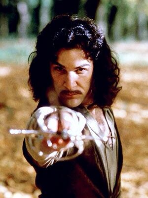

DiCarlo the Sorcerer
Character Name
Alternate Identities: Guglielmo DiCarlo
Player Name: Chris Goodwin
Character Name
Alternate Identities: Guglielmo DiCarlo
Player Name: Chris Goodwin

CHARACTERISTICS
| Val | Char | Points | Roll | Notes |
|---|---|---|---|---|
| 10 | STR | 0 | 11- | HTH Damage 2d6 END [1] |
| 15 | DEX | 10 | 12- | |
| 18 | CON | 8 | 13- | |
| 18 | INT | 8 | 13- | PER Roll 13-/17- |
| 14 | EGO | 4 | 12- | |
| 18 | PRE | 8 | 13- | PRE Attack: 3 ½d6 |
| 6 | OCV | 15 | ||
| 6 | DCV | 15 | ||
| 3 | OMCV | 0 | ||
| 4 | DMCV | 3 | ||
| 4 | SPD | 20 | Phases: 3, 6, 9, 12 | |
| 8/17 | PD | 6 | 8/17 PD (0/9 rPD) | |
| 8/17 | ED | 6 | 8/17 ED (0/9 rED) | |
| 10 | REC | 6 | ||
| 40 | END | 4 | ||
| 13 | BODY | 3 | ||
| 40 | STUN | 10 | ||
| 128 | Total Characteristic Points | |||
CHARACTER IMAGE

EXPERIENCE POINTS
| Total Points: | 447 |
|---|---|
| Total XP Earned: | 25 |
| XP Spent: | 22 |
| XP Unspent: | 3 |
| Base Points: | 425 |
| Complication Points: | 50 |
MOVEMENT
| Type | Total |
|---|---|
| Run | 14m [28m NC] |
| Swim | 4m [ 8m NC] |
| H. Leap | 4m |
| V. Leap | 2m |
| Flight | 10m [20m NC] |
DEFENSES
| Type | Amount |
|---|---|
| Physical Defense | 8/17 |
| Resistant Physical Defense | 0/9 |
| Energy Defense | 8/17 |
| Resistant Energy Defense | 0/9 |
| Mental Defense | 0 |
| Power Defense | 0 |
COMBAT INFORMATION
| OCV: | 6 | DCV: | 6 | |
|---|---|---|---|---|
| Skill Levels: | ||||
COMBAT MANEUVERS
| Maneuver | Phase | OCV | DCV | Effect |
|---|---|---|---|---|
| Block | ½ | +0 | +0 | Block, abort |
| Brace | 0 | +2 | ½ | +2 vs. Range Mod. |
| Disarm | ½ | -2 | +0 | Can disarm |
| Dodge | ½ | -- | +3 | Abort, vs. all attacks |
| Grab | ½ | -1 | -2 | Grab two limbs |
| Grab By | ½ | -3 | -4 | Move and Grab |
| Haymaker | ½* | +0 | -5 | +4 DC attack damage |
| Move By | ½ | -2 | -2 | STR/2+v/10; you take 1/3 |
| Move Through | ½ | -v/10 | -3 | STR+v/6; you take ½ or all |
| Multiple Attack | 1 | var | ½ | Attack multiple times |
| Set | 1 | +1 | +0 | Ranged Attacks only |
| Shove | ½ | -1 | -1 | Push 1m per 5 STR |
| Strike | ½ | +0 | +0 | STR or weapon |
| Throw | ½ | +0 | +0 | Throw w/STR dmg |
| Trip | ½ | -1 | -2 | Ranged Attacks only |
| Ballestra | ½ | +2 | -2 | Weapon +5 DC Strike; Half Move Required |
| Ceduto | ½ | +0 | +0 | Weapon +1 DC, 25 STR to escape Bind |
| Cut | ½ | +2 | +1 | Weapon +1 DC, Strike |
| Lunge | ½ | +1 | -2 | Weapon +5 DC Strike |
| Parry | ½ | +2 | +2 | Block, Abort |
| Void | ½ | -- | +5 | Dodge, Affects All Attacks, Abort |
COMBAT MODIFIERS
| Range (M) | 0-8 | 9-16 | 17-32 | 33-64 | 65-125 | 126-250 |
|---|---|---|---|---|---|---|
| RMOD | 0 | -2 | -4 | -6 | -8 | -10 |
HIT LOCATION
| Roll | Location | STUNx | NSTUN | BODYx | To Hit |
|---|---|---|---|---|---|
| 3-5 | Head | x5 | x2 | x2 | -8 |
| 6 | Hands | x1 | x½ | x½ | -6 |
| 7-8 | Arms | x2 | x½ | x½ | -5 |
| 9 | Shoulders | x3 | x1 | x1 | -5 |
| 10-11 | Chest | x3 | x1 | x1 | -3 |
| 12 | Stomach | x4 | x1.5 | x1 | -7 |
| 13 | Vitals | x4 | x1.5 | x2 | -8 |
| 14 | Thighs | x2 | x1 | x1 | -4 |
| 15-16 | Legs | x2 | x½ | x½ | -6 |
| 17+ | Feet | x1 | x½ | x½ | -8 |
| Targeting shot | OCV | Hit Location |
|---|---|---|
| Head shot (Head to Shoulders) | -4 | 1d6+3 |
| High shot (Head to Vitals) | -2 | 2d6+1 |
| Body shot (Hands to Legs) | -1 | 2d6+4 |
| Low shot (Shoulders to Feet) | -2 | 2d6+7 |
| Leg shot (Vitals to Feet) | -4 | 1d6+12 |